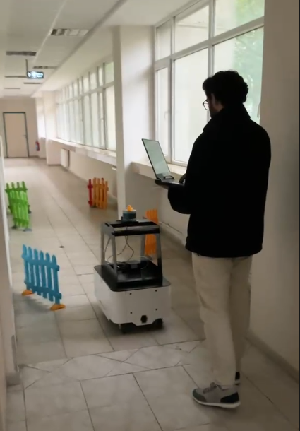
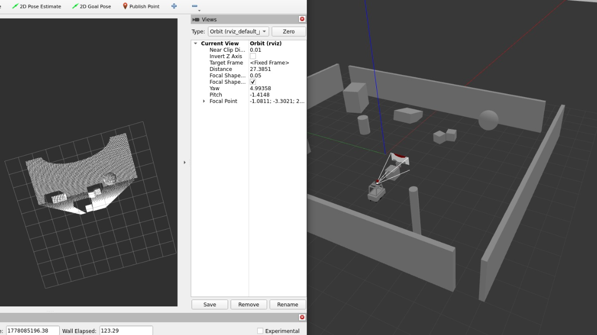
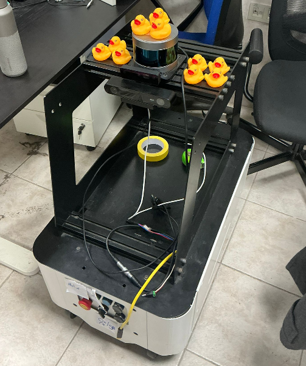

Stereo Perception
OAK-D Pro depth sensing
MOBOROBOT
A physical robot that builds its understanding of a space, visualizes safe movement through costmaps, then systematically covers reachable regions without GPS or pre-built maps.
OVERVIEW
OAK-D Pro provides synchronized stereo depth and inertial data for localization and scene understanding.
RTAB-Map fuses visual-inertial input into real-time SLAM, estimating pose while building a usable map.
Nav2 uses the map and costmaps to plan safe motion around obstacles and toward target regions.
Coverage planning converts reachable free space into systematic paths so the robot visits the area.
COSTMAP DEMO
Costmaps turn data into a live spatial model: occupied cells, inflated obstacles, free space, and safe movement regions.
The costmap view shows how MOBOROBOT separates reachable floor from unsafe areas before coverage behavior is executed.
COVERAGE DEMO
Once MOBOROBOT understands the space, coverage planning decides where to go so reachable areas are systematically visited.
The robot works through the environment in repeatable passes, using the map and costmap constraints instead of GPS or a pre-built route.
SIMULATION TO REALITY
Gazebo and RViz are used to test mapping, costmap behavior, and coverage before physical deployment.

Real tests verify traction, sensor placement, localization quality, and safe motion under imperfect conditions.

World models and simulated sensors expose mapping and coverage behavior before hardware tests.
COSTMAP / RVIZ BREAKDOWN

Inflation zones keep the robot from planning too close to detected obstacles.

Coverage paths show which reachable regions have been systematically visited.

Gazebo scenes make it possible to repeat navigation trials before real deployment.

Real footage confirms the planner survives lighting, floor, and sensor imperfections.
TEAM